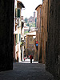

Adventures in Tuscany
This is a short chronicle of my visit to Italy. Click on the thumbnails to see a larger view of each photograph. Enjoy!
Pozzarello
 The house we stayed in was called Pozzarello and it was built around the year 1200 as the home of the gardner who tended the grounds of the adjacent castle. The thick walls kept us nice and cool inside, despite the blistering mid-day heat. This is the view from our bedroom window.
The house we stayed in was called Pozzarello and it was built around the year 1200 as the home of the gardner who tended the grounds of the adjacent castle. The thick walls kept us nice and cool inside, despite the blistering mid-day heat. This is the view from our bedroom window.
The Tuscan Countryside
 This is the scene on the way to Montalcino (all roads lead to Montalcino!). It looks a lot like the scene on the way to Sienna, and the scene on the way to the grocery store. We were surrounded by beautiful countryside for most of our travels.
This is the scene on the way to Montalcino (all roads lead to Montalcino!). It looks a lot like the scene on the way to Sienna, and the scene on the way to the grocery store. We were surrounded by beautiful countryside for most of our travels.
The Sienna
The closest city to our villa was Sienna, about 30 minutes away. We spent many days exploring the steep and crooked streets, sampling the local cuisine at outdoor restaurants, and stopping in the dark and echoey Duomo to escape the sun.
The sweets
 Candy, also called sweets or lollies, is a confection that features sugar as a principal ingredient. The category, called sugar confectionery, encompasses any sweet confection, including chocolate, chewing gum, and sugar candy. ... However, the definition of candy also depends upon how people treat the food.
Candy, also called sweets or lollies, is a confection that features sugar as a principal ingredient. The category, called sugar confectionery, encompasses any sweet confection, including chocolate, chewing gum, and sugar candy. ... However, the definition of candy also depends upon how people treat the food.
The cathedral
 The majority of cathedrals and large churches of the Western European tradition have a high wide nave with a lower aisle separated by an arcade on either side. Occasionally the aisles are as high as the nave, forming a hall church. ... Notre Dame de Paris has two aisles and a row of chapels.
The majority of cathedrals and large churches of the Western European tradition have a high wide nave with a lower aisle separated by an arcade on either side. Occasionally the aisles are as high as the nave, forming a hall church. ... Notre Dame de Paris has two aisles and a row of chapels.
The lavender
 Lavender is the name given to several species of herbaceous, perennial shrubs in the genus Lavandula which are grown as ornamental plants or for essential oil. Lavender plants are small, branching and spreading shrubs with grey-green leaves and long flowering shoots.
Lavender is the name given to several species of herbaceous, perennial shrubs in the genus Lavandula which are grown as ornamental plants or for essential oil. Lavender plants are small, branching and spreading shrubs with grey-green leaves and long flowering shoots.